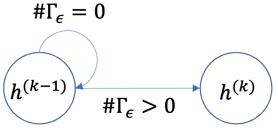

黑塞尔曼-克劳斯
HK模式[1] 描述持续舆论动态. 每个节点都有一个初步意见:`h in [-1,1]',并用离散的回合加以更新。 每一步:1) : : : math: `epsilon ' 邻居识别: 找到集: math: `: `amma epsilon' 每个节点, : math: `d {i, j}=left|h i-h jright|leepsilon', : math: jinGamma epsilon'; 2) 更新观点值: 节点: mmath: `i' 在下一个步骤更新如下:
\[左 右 右 右 右 右 右 右 右\]
其中: math:QQGamma epsilon`表示:math:`epsilon'的邻居人数.
状态
在模拟期间,一个节点具有连续的观测值:
状态 |
范围 |
|---|---|
意 见 |
浮在 [1, 1] 中 |
参数
名称 |
类型 |
默认 |
要求数 |
说明 |
|---|---|---|---|---|
数据 |
数据 |
对 |
图示数据. |
|
种子 |
列表[浮 / 无 |
对 |
列出初始视图值或无任意生成。 |
|
伊普西隆语Name |
在 [0, 1] 中浮动 |
对 |
信心约束决定哪个邻居影响意见更新. |
|
设备 |
“ cpu” / int( CUDA 指数) |
"cpu" (英语). |
没有 |
运行模型的设备 。 |
兰德种子 |
输入 |
无 |
没有 |
用于生成初始视图值的随机种子 。 |
执行情况
与包含三个离散状态的SIR模型不同,HK模型使用连续的舆论空间. 为了避免无数州,我们只考虑两例(图ref{fig:HK}):如果$Gammaepsilon=0美元,则意见保持不变;否则,它会被更新到$epsilon$-nebors的平均值。
{kind=link}

对于每个邻居:math:`jin N(i)',生成两个词:
\[\begin{split}开始{对齐}
m {ji\ c}^{(k)} &=\mathbf{1}\i}!\左 (|h i^{(k-1)} - h j^{(k-1)} <\varepsilon\右)\cdot h j^{(k-1)},\\[6pt]
m {ji\ v}^{(k)}\ mathbf{1}\!\左(|h i^{(k-1)} - h j^{(k-1)} < varepsilon\右).
结束{对齐}\end{split}\]
: math: QQMathbf{1} (cdot) ” 是指示函数。
节点:i'通过平均:math: varepsilon`-邻居:
\[\begin{split}开始{对齐}
&=(k)}
开始{ cases}
\dfrac\sum\limits\j\in N(i)}m\ji\c\\(k)\sum\limits\j\in N(i)}m\ji\v(k)\,
&\ text{if}\ sum\ limits\j\ in N(i)} m\ ji\v\(k)} > 0,\\ [8pt]
\ mathrm{ NaN}, &\ text{ 其它情况下} 。
\ end{ cases}\\\ [10pt]
结束{对齐}\end{split}\]
最后,节点:`i ' 的意见更新为:
\[\begin{split}开始{对齐}
h(k)}
开始{ cases}
m i^{(k)}, &\ text{if} m i^{(k)}\neq\mathrm{NaN},\\[6pt]
h i^{(k-1)}, &\ text{另类}.
结束{ cases}
结束{对齐}\end{split}\]